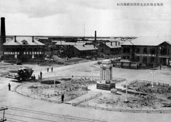

1954—1957年，中苏合作建场
友谊农场是“一五”时期苏联援建的重点项目，列入通常所说的156项重点工程。1954年10月，中苏双方就援建大型国营谷物农场互致国书，初期规划开垦约两万公顷。12月7日，国务院决定在当时的集贤县三道岗一带建立友谊农场，任命王操犁为首任场长。12月21日，建设者在选定的场部举行升旗仪式。
苏联援助的卡车和农机经铁路运抵福利屯站，随后由农场接收、组装，再分配到各作业队。苏联专家参加了选址、勘测和机手培训，一批学员先在哈尔滨王岗接受训练，1955年与专家一同到场。那年春天，建设者开始大规模开荒，同时修路、建作业站。农场次年转入正式生产，逐步建起维修、仓储和运输体系。
中苏工程技术人员和翻译也在这里安家工作。随行家属起初住在福利屯，1955年秋专家宿舍建成后迁到友谊。部分苏联专家留到了1957年底。农场以周恩来提出的“出粮食、出经验、出人才”为建场目标。成套机械作业、场队管理和机手培训的经验，后来被带到其他国营农场。友谊公园里的中苏友谊纪念碑纪念这段合作。


1960—1991年，从设县到县场分设
1960年，友谊因农场得名，首次设县，县与农场合一管理。1962年撤县，1964年恢复。1968年，农场编入黑龙江生产建设兵团，为第三师第十八团，分场和作业队改按营、连组织。1973年，友谊县再次撤销。
1976年兵团撤销，友谊恢复农场建制。1984年经国务院批准恢复友谊县，由佳木斯市管辖。1988年县场分设，县政府负责地方行政，农场负责农业生产经营。1991年，友谊县划归双鸭山市。


友谊农场分场旧图
旧图标出总场、各分场和林分场的分布。分场之下设有作业队，五分场二队就是今天的第五管理区第二作业站。

查阅来源
- 亲历者蒋建平谈建场 · 友谊县人民政府
- 友谊农场史话 · 友谊县人民政府
- 友谊农场建置 · 黑龙江数字方志
- 友谊县场体制改革亲历 · 友谊县人民政府
- 天下第一场，美丽友谊县 · 家乡风物志
- 友谊农场建设初期报道 · 人民日报历史版
- 友谊农场与“一五”援建 · 人民网